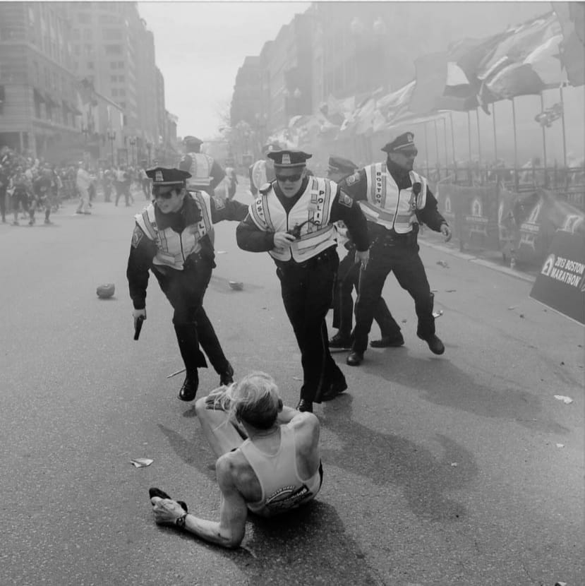
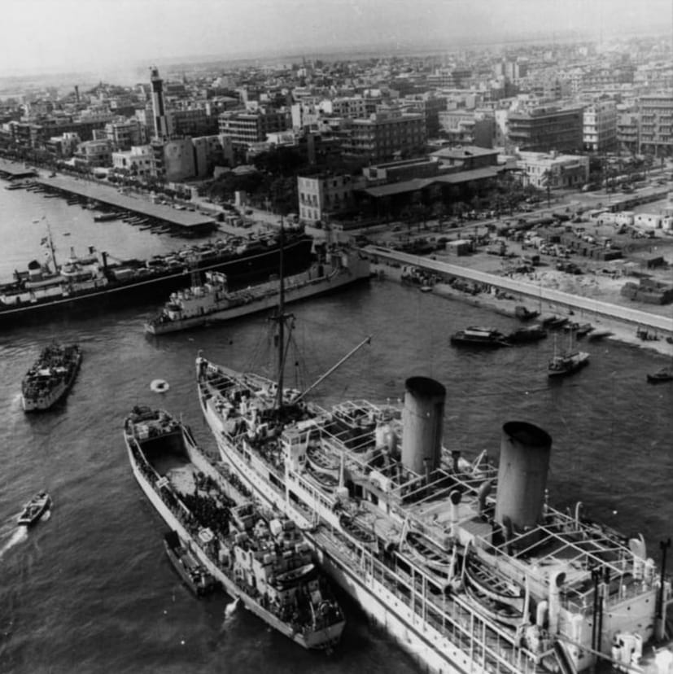
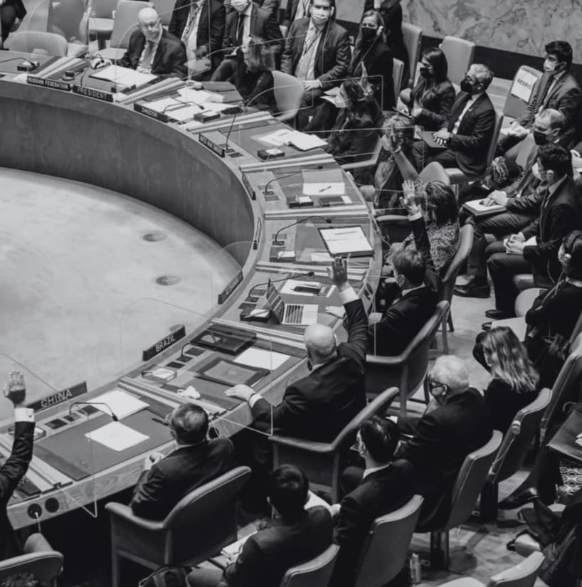
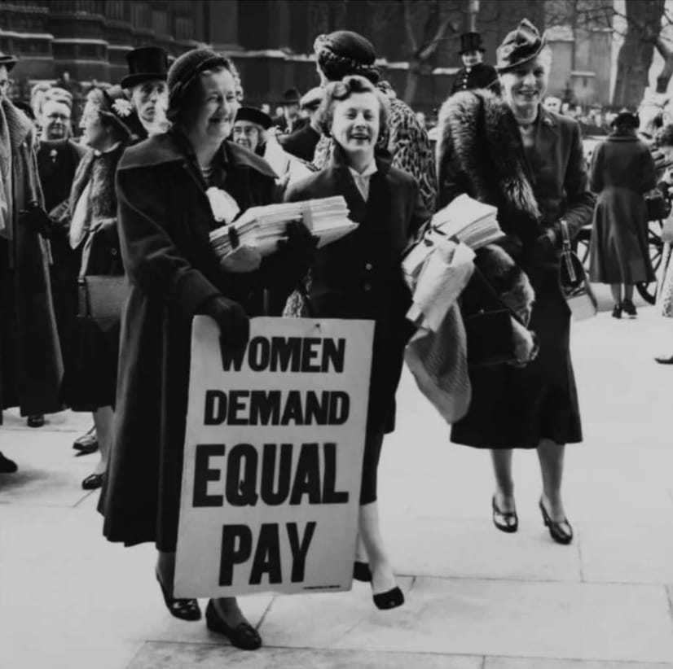
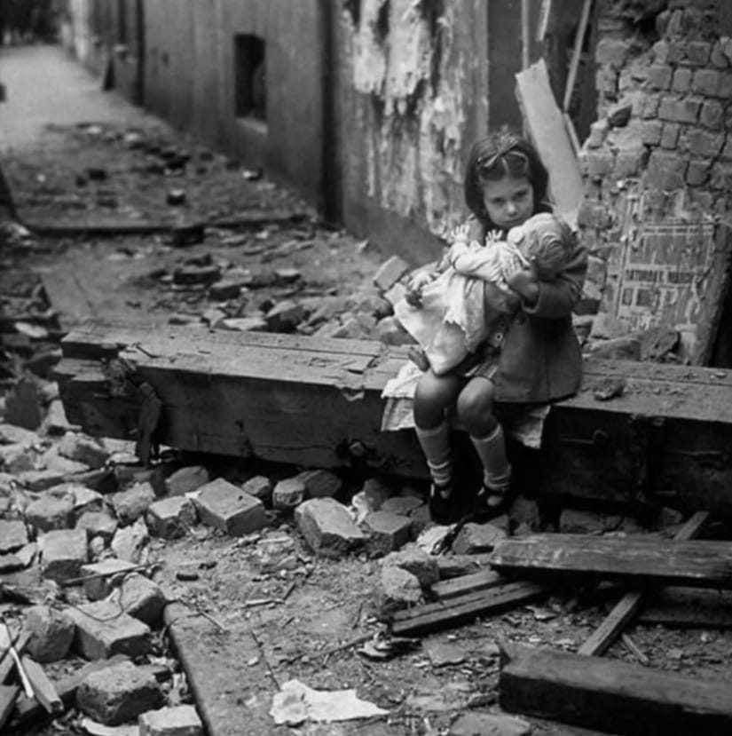

Where Diplomacy Unfolds
Six chambers. Six agendas. Infinite possibilities.

Federal Bureau of Investigation
Addresses the Boston Marathon Bombing of April 15, 2013. Two explosions near the finish line killed three civilians and injured over 260. The investigation led by the FBI became a massive federal and state operation targeting brothers Tamerlan and Dzhokhar Tsarnaev.

Joint Historical Crisis Committee
Focuses on the Suez Canal Crisis of 1956, triggered by Nasser's nationalisation of the Canal. The UK, France, and Israel launched a military operation against Egypt. Delegates must navigate between military escalation and diplomatic maneuver under great power pressure.

United Nations Security Council
Examines the UN Secretary-General appointment under Article 97, where P5 veto power shapes global legitimacy — and the Arctic sovereignty dispute, where melting ice caps open new trade routes, intensifying geopolitical competition between Greenland, Denmark, and the US.
International Narcotics Control Board
Strengthens national control mechanisms under the 1961 Single Convention and 1971 Convention. The misuse of prescription narcotics and psychotropic substances has become a global public health crisis — a threat evolving faster than the mechanisms designed to contain it.

United Nations Women
Addresses unpaid and low-paid care work as an invisible burden disproportionately borne by women. Childcare, eldercare, and domestic work sustain economies yet limit women's independence. Recognizing and redistributing care work is critical for sustainable development and gender equality.

Social, Humanitarian and Cultural Committee
Examines how armed conflicts devastate millions of children globally. In conflict zones, children face recruitment as soldiers, loss of education, psychological trauma, and lack of healthcare. Despite frameworks like the UN Convention on the Rights of the Child, implementation gaps leave children extremely vulnerable.